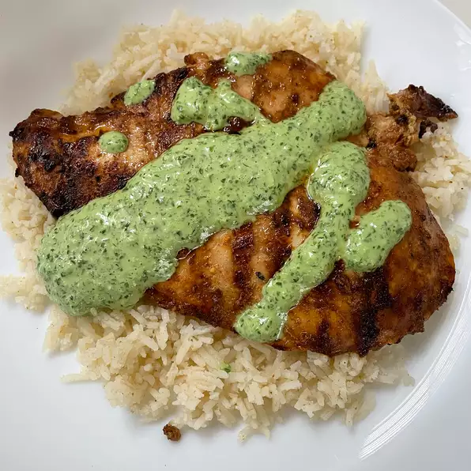

Pollo a la Brasa

Pollo a la Brasa
For your next cookout, treat your family to a classic Peruvian dish made on the grill instead of in the oven. This recipe is simple to prepare and is bursting with flavor. If you like things spicy, leave the seeds in your jalapenos for extra heat.
Ingredients
- 2 pounds bone in chicken thighs
- 1/3 cup soy sauce
- 5 cloves garlic
- 2 tablespoons lime juice
- 1 tablespoon vegetable oil
- 2 teaspoons cumin
- 1 teaspoon paprika
- 1/2 teaspoon dried oregano
Sauce
- 2 fresh jalapeno peppers
- 1/2 cup firmly packed cilantro
- 1/4 cup mayonnaise
- 1 tablespoon lime juice
- 1 tablespoon extra virgin olive oil
- 1 clove garlic
- 1/2 teaspoon salt
- 1/4 teaspoon ground black pepper
Steps
- Place chicken thighs into a gallon-sized resealable plastic bag. Blend soy sauce, garlic, lime juice, vegetable oil, cumin, paprika, and oregano in a blender until smooth. Pour mixture over chicken, seal the bag, and refrigerate for 8 hours.
- Combine jalapeno peppers, cilantro, mayonnaise, lime juice, olive oil, garlic, salt, and pepper in a blender; pulse until sauce is smooth. Transfer sauce to a covered bowl and refrigerate until ready to serve.
- Preheat an outdoor grill for medium-high heat and lightly oil the grate.
- Remove chicken thighs from the bag and place on the grill. Discard bag with excess marinade. Grill thighs for 7 minutes; flip and grill 7 additional minutes.
- Transfer thighs to a serving dish and drizzle reserved sauce over the chicken.
Return Home